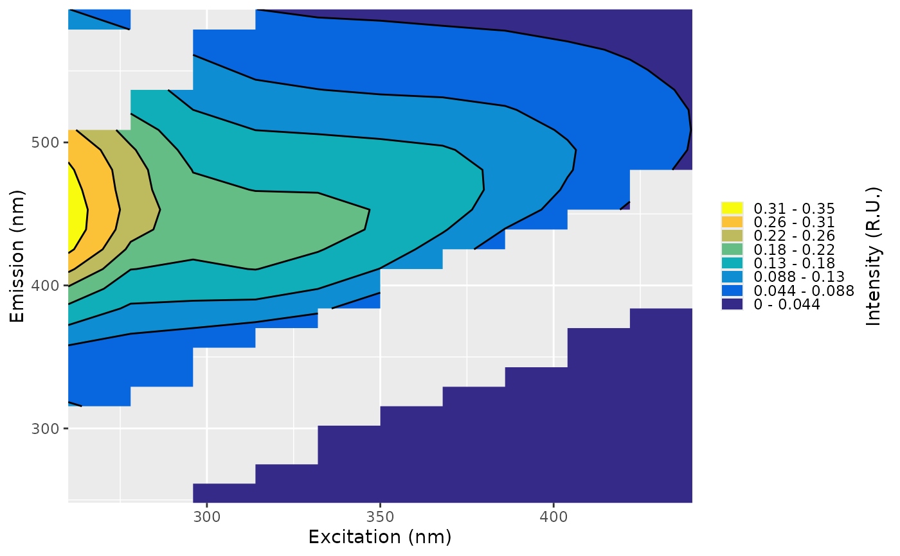
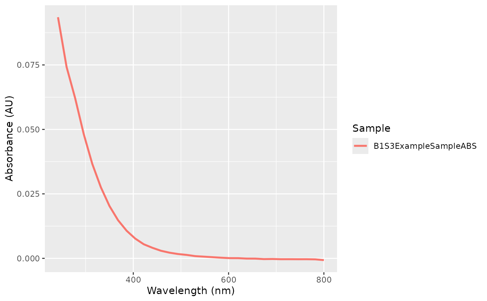
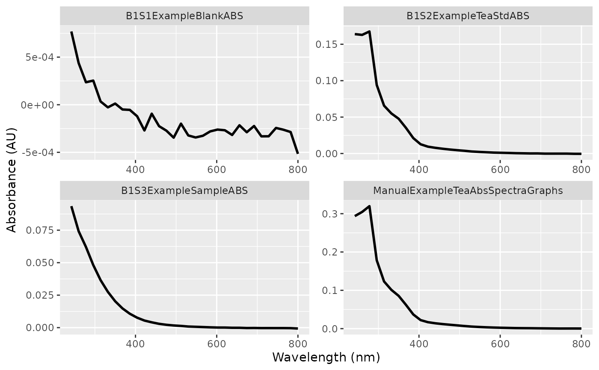
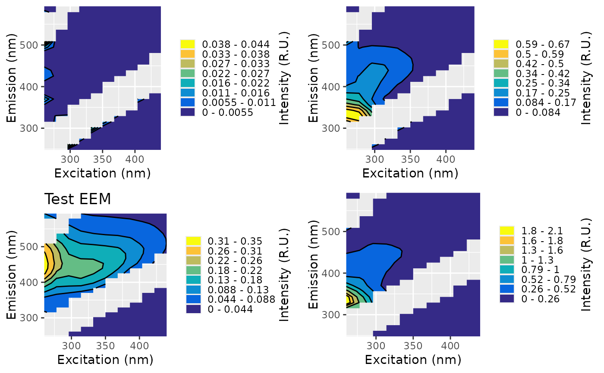
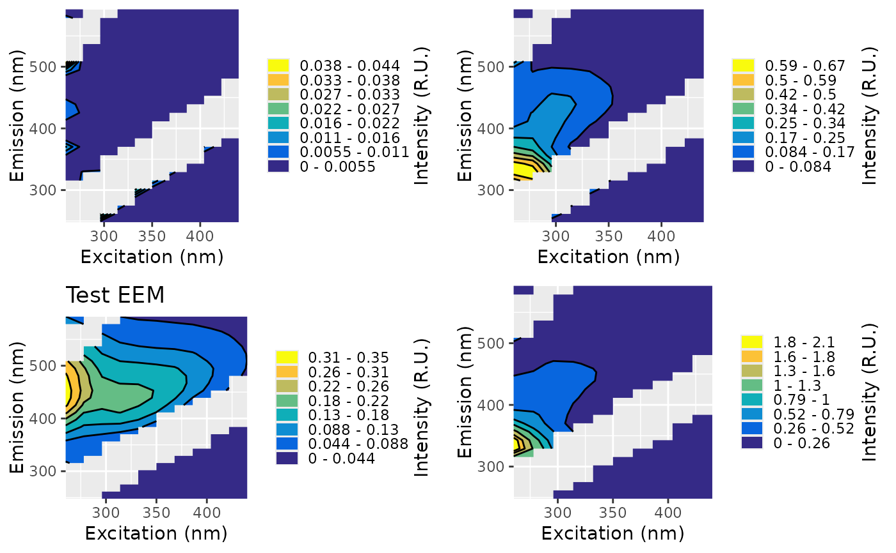

Used to make a nice plot of one or multiple excitation emission matrices (EEMs) or absorbance spectra using ggplot2.
Usage
# S3 method for class 'eem'
plot(
x,
nbin = 8,
equal_scale = FALSE,
pal = NULL,
title = "none",
remove_lower = FALSE,
annotate = FALSE,
index_method = "eemanalyzeR",
...
)
# S3 method for class 'eemlist'
plot(
x,
nbin = 8,
equal_scale = FALSE,
pal = NULL,
remove_lower = FALSE,
title = "none",
annotate = FALSE,
index_method = "eemanalyzeR",
...
)
# S3 method for class 'abs'
plot(x, pal = NULL, ...)
# S3 method for class 'abslist'
plot(x, pal = NULL, ...)Arguments
- x
An
eemlist,eem,abslist, orabsobject.- nbin
Number of bins used in the contour plot.
- equal_scale
Logical. If
TRUE, sets the scale the same for all plots in aneemlist.- pal
Color palette for the fill scale. Defaults to
pals::parula(). If fewer colors are provided than required,grDevices::colorRampPalette()is used to fill in colors.- title
Either "none", "meta_name", or "sample" which indicates what to use for the plot title.
- remove_lower
Logical. If
TRUE, sets values below the first-order Rayleigh line toNA, which can reduce artifacts affecting the color scale.- annotate
Logical. If
TRUE, displays index regions on EEM plots.- index_method
Either "eemanalyzeR", "eemR", "usgs".
- ...
Additional arguments passed to
plot.
Value
If
xis aneem,abs, orabslist: a singleggplot2object.If
xis aneemlist: a list ofggplot2objects.
Details
Single EEM plots return a ggplot2 object, compatible with other ggplot2
modifications. Multiple EEMs return a list of ggplot2 objects, which can
be individually modified. See examples for usage.
Note
Slow plotting may be due to your default graphics device. See https://forum.posit.co/t/graphics-not-working-in-rstudio/149111 for guidance.
Examples
eems <- example_processed_eems
abs <- example_processed_abs
# plot just one eem/abs
plot(eems[[3]])

plot(abs[[3]])

# plot all in an eemlist or abslist
plots <- plot(eems)
plots <- plot(abs)
# change color scale
plot(eems, pal = c("darkblue", "lightblue"))
# make color bar consistent across all plots
plot(eems[2:4], equal_scale = TRUE)
# customize using ggplot2 commands
plot(eems[[2]]) + ggplot2::labs(title = "Test EEM")

plot(eems)[[3]] + ggplot2::labs(title = "Test EEM")
 # modify then arrange together
plots <- plot(eems)
plots[[3]] <- plots[[3]] + ggplot2::labs(title = "Test EEM")
print(ggpubr::ggarrange(plotlist = plots))

# remove lower area below rayleigh line
plots <- plot(eems, remove_lower = TRUE)
# annotate the plot with the peaks
plot(eems[[3]], annotate = TRUE)
# modify then arrange together
plots <- plot(eems)
plots[[3]] <- plots[[3]] + ggplot2::labs(title = "Test EEM")
print(ggpubr::ggarrange(plotlist = plots))

# remove lower area below rayleigh line
plots <- plot(eems, remove_lower = TRUE)
# annotate the plot with the peaks
plot(eems[[3]], annotate = TRUE)